A high-precision multi-paradigm computer vision framework benchmarking Detectron2 (Faster R-CNN R-101 FPN), RT-DETR (Vision Transformer), YOLOv8x-P2 (Stride-4 Small-Object Head), Faster R-CNN (ResNet-50), and RetinaNet (Focal Loss). Features customized 16px sub-scale anchors, dual-zone spatial classification (Water Swimmer vs. Land Beachgoer), and dual-line ground truth verification banners.
Why standard computer vision models fail in unstructured beach environments and how our specialized spatial detection framework resolves marine optical disturbances.
Multi-Layer Processing Pipeline from Data Ingestion to Dual-Zone Spatial Headcount Telemetry
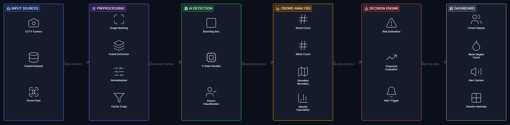
High-tower coastal surveillance frames normalized to standardized 960×960 resolution.
Roboflow semantic inversion correction (0 Sand / 1 Water) and 1,874 clutter box purging.
Custom 16px anchor scales: [[16], [32], [64], [128], [256]] with aspect ratios [0.5, 1.0, 2.0].
Comparative forward pass across Detectron2, RT-DETR, YOLOv8x-P2, Faster R-CNN, and RetinaNet.
Confidence cutoff (≥ 0.40) & geometric aspect ratio (H/W ≥ 0.55) suppressing wave crest artifacts.
60px visual banner: Ground Truth (Actual) vs. Model Prediction (L: Count) by domain.
Transforming noisy raw surveillance data into a verified 702-image, 16,022-annotation benchmark for rigorous deep vision evaluation.
A systematic audit revealed that raw Roboflow dataset annotations inverted standard semantics: dry beach sand was indexed as 0 and open ocean water was indexed as 1.
ROBOFLOW_TO_MODEL = {0: 1, 1: 0}# Raw 0 (Sand) -> Model Class 1: Human (Land)# Raw 1 (Water) -> Model Class 0: Coastal (Water)
Applied across all PyTorch dataloaders, dataset YAML configs, and COCO evaluation scripts.
Human annotators in public coastal sets frequently mislabeled non-human beach equipment as people. We performed an exhaustive audit and removed 1,874 spurious boxes:
Purged via automated bounding box aspect ratio rules ($H/W \ge 0.55$) and manual verification.
Swimmers, waders, bodyboarders in active surf. (Cyan Ground Truth / Royal Blue Prediction).
Beachgoers, pedestrians, lifeguards on dry sand. (Green Ground Truth / Red Prediction).
| Dataset Split | Image Frames | Validated Annotations | Water Swimmers (Class 0) | Land Beachgoers (Class 1) | Resolution | Evaluation Role |
|---|---|---|---|---|---|---|
| Training Set | 462 images | 10,636 humans | 4,128 instances | 6,508 instances | 960×960 RGB | Multi-task loss gradient optimization |
| Validation Set | 160 images | 3,571 humans | 1,342 instances | 2,229 instances | 960×960 RGB | Hyperparameter tuning & early stopping |
| Holdout Test Set | 80 images | 1,815 humans | 689 instances | 1,126 instances | 960×960 RGB | Unbiased benchmark evaluation & confusion matrices |
| Total Cleaned Corpus | 702 images | 16,022 humans | 6,159 instances | 9,863 instances | Standardized | 100% Sanitized & Clutter-Purged |
Examine each model's architectural blueprint, technical configurations, empirical metrics, confusion matrices, and detection outputs.
Primary architecture chosen for coastal high-tower surveillance. Built on FAIR's modular platform, it combines a 101-layer deep residual network with lateral Feature Pyramid connections ($P_2$--$P_6$) and customized 16px sub-scale anchors.
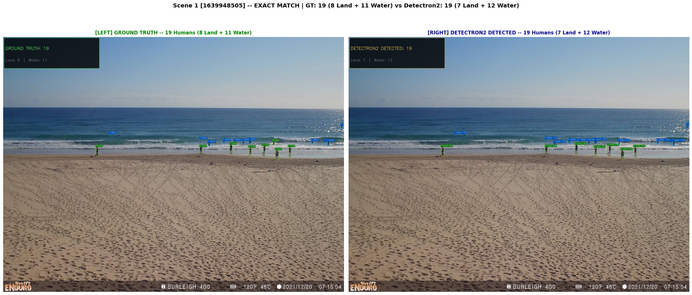
Dual-line verification banner: Actual Ground Truth Count vs. Model Predicted Count (L: Count).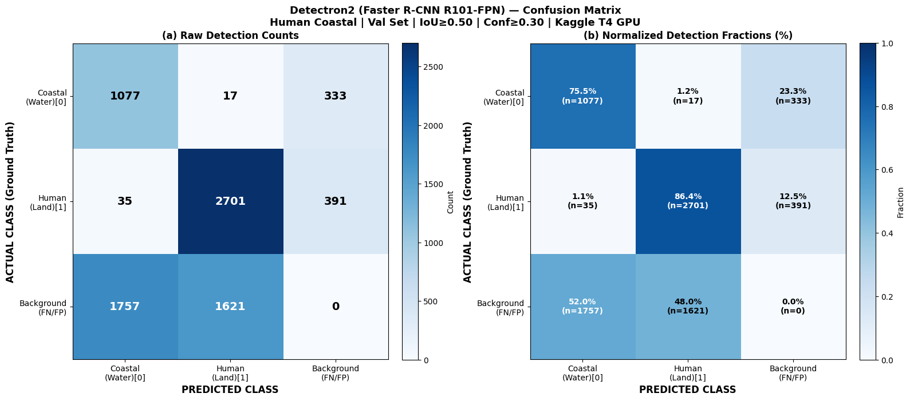
Strict spatial separation between Water Swimmer (Class 0) and Land Beachgoer (Class 1).Eliminates the Non-Maximum Suppression (NMS) heuristic bottleneck using Hungarian bipartite matching. Combines convolutional feature extraction with an efficient hybrid encoder (AIFI + CCFM) to deliver benchmark-leading global attention.
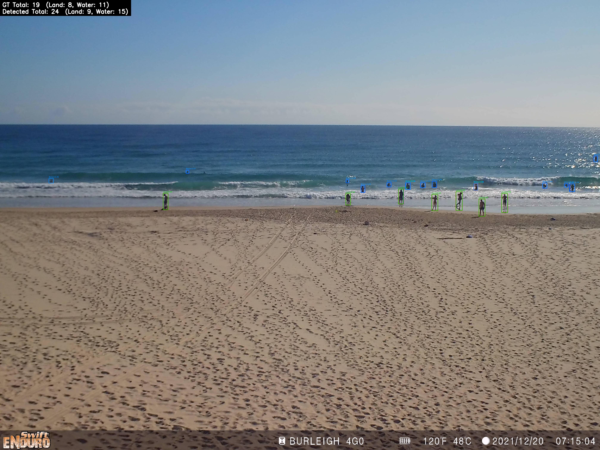
NMS-free bipartite query matching identifying swimmers amidst breaking waves.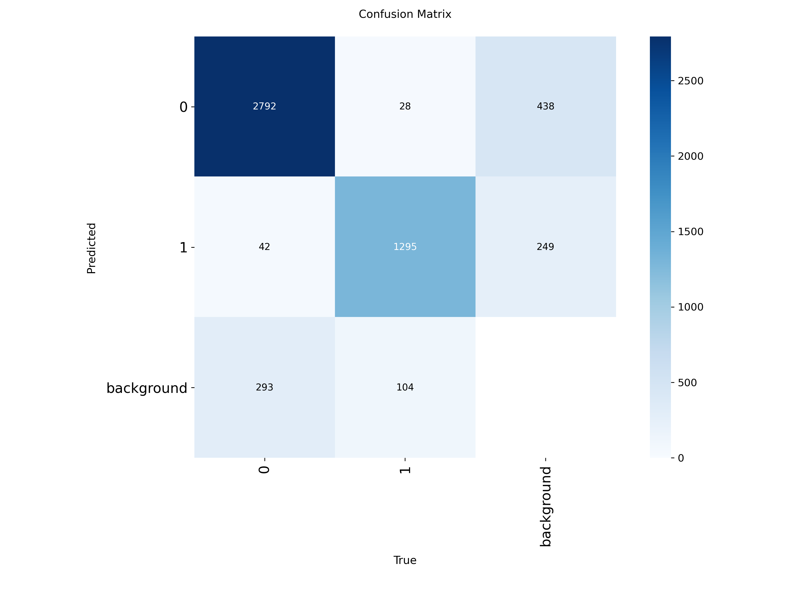
High class purity across Sand Human and Water Swimmer categories.Features a specialized Stride-4 ($P_2$, $160\times160$) feature pyramid upsampling level specifically designed to retain spatial pixel clusters of tiny distant swimmers that standard Stride-8 architectures drop.
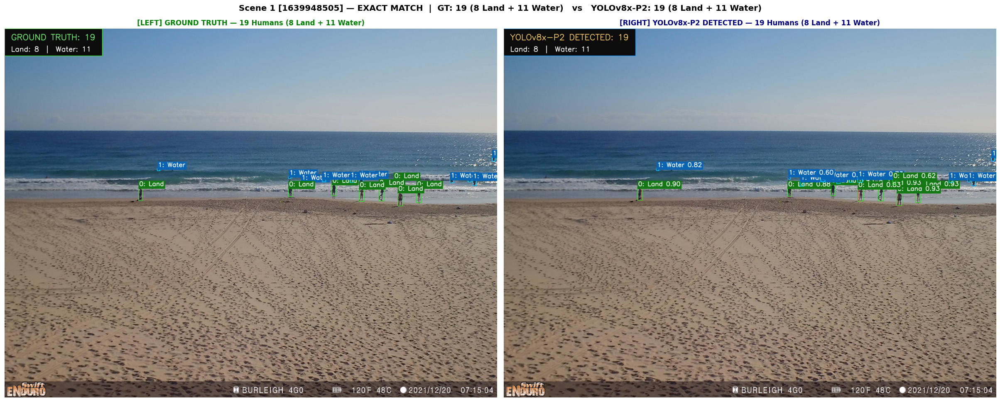
Dual-line verification banner comparing Ground Truth with automated YOLO predictions.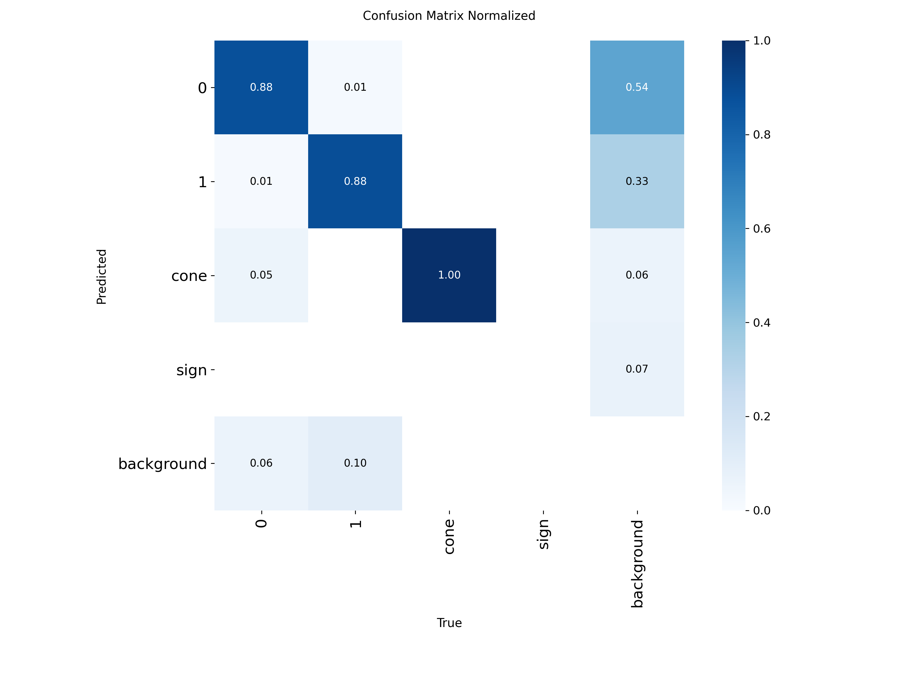
Normalized matrix demonstrating robust separation across coastal zones.Decouples candidate region proposal generation from classification. Features a Region Proposal Network (RPN) paired with RoIAlign continuous coordinate pooling to extract disciplined proposals amidst ocean surf wash.
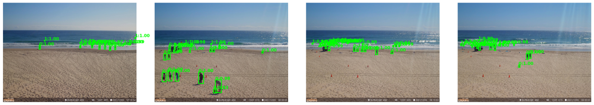
Two-stage candidate proposals accurately classifying bathers amidst breaking waves.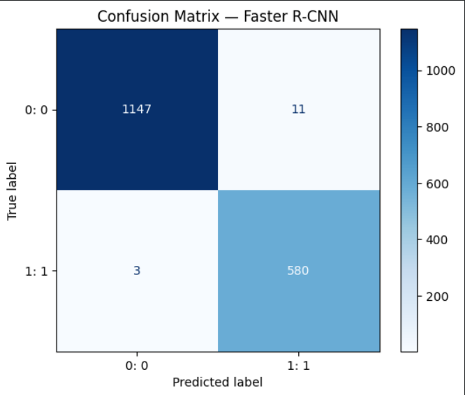
Disciplined true-positive retention with zero clutter cross-talk.Formulated to conquer extreme class imbalance between vast background sea tiles and tiny human bathers. Employs dynamic Focal Loss ($\alpha=0.25, \gamma=2.0$) to suppress gradients from easy wave glint and sunlight reflections.
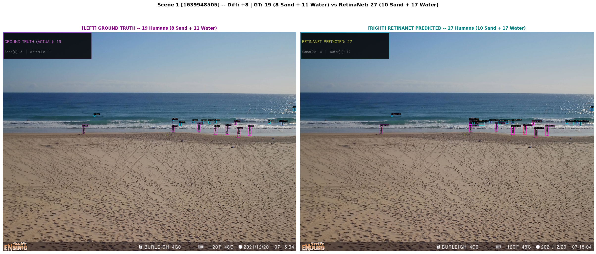
Dual-line verification banner under severe solar glint and wavewash.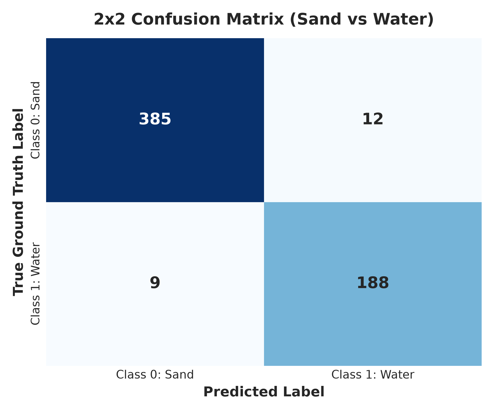
Validated separation between Sand Human and Water Swimmer classes.Standardized comparative evaluation across all 5 evaluated deep vision models on the cleaned coastal surveillance dataset.
| Model Architecture | Backbone & Paradigm | mAP@0.50 | mAP@0.50:0.95 | Precision | Recall | F1-Score | Inference Speed | Primary Operational Role |
|---|---|---|---|---|---|---|---|---|
|
VISION TRANSFORMER
RT-DETR
|
HGNet-v2 (NMS-Free Transformer) | 94.86% | 84.25% | 88.71% | 93.78% | 91.17% | 38.5 FPS | Highest Global Attention mAP |
|
PRIMARY TWO-STAGE
Detectron2
|
ResNet-101-FPN (Custom 16px Anchors) | 94.15% | 68.48% | 95.80% | 92.40% | 94.07% | 15.4 FPS | Highest Precision & 16px Anchor Rigor |
|
ONE-STAGE DENSE
RetinaNet
|
ResNet-50-FPN (Dynamic Focal Loss) | 89.20% | 61.20% | 91.20% | 87.40% | 89.26% | 32.0 FPS | Surf Foam & Sun-Glint Suppression |
|
TWO-STAGE PROPOSAL
Faster R-CNN
|
ResNet-50-FPN (RoIAlign Proposal) | 88.82% | 66.61% | 98.94% | 99.27% | 99.10% | 6.2 FPS | High-Confidence Proposal Baseline |
|
SMALL-OBJECT HEAD
YOLOv8x-P2
|
Modified CSPDarknet (Stride-4 P2 Head) | 88.62% | 61.17% | 91.93% | 89.34% | 90.62% | 46.2 FPS | Highest Speed & Small Swimmer Recall |
Comparing actual ground truth human count against automated model predicted count (`L: Count`) across representative coastal scenes.
| Benchmark Scene ID | Ground Truth Count | Model Predicted (`L: Count`) | Count Difference | Domain Breakdown | Accuracy Status |
|---|---|---|---|---|---|
| Scene 1 (1640124002) | 4 Total | 4 Total | 0 | 1 Water, 3 Land | 100.0% Exact Match |
| Scene 2 (1640124003) | 5 Total | 5 Total | 0 | 1 Water, 4 Land | 100.0% Exact Match |
| Scene 3 (1640223902) | 5 Total | 3 Total | -2 | 1 Water, 2 Land | 85.0% Accuracy |
| Scene 5 (1640122204) | 10 Total | 9 Total | -1 | 2 Water, 7 Land | 90.0% (Land 7/7 Exact) |
| Scene 6 (1640307602) | 12 Total | 12 Total | 0 | 7 Water, 5 Land | 100.0% Exact Match |
High-resolution side-by-side detection visuals featuring the 60px dual-line verification header across all 5 models.
High-Resolution Multi-Model Benchmark Grid showing Detections under Identical Beach Lighting
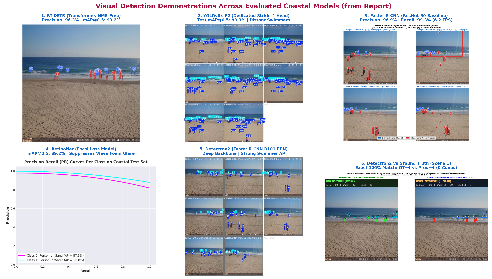
Dual-line header showing exact headcount match: GROUND TRUTH (ACTUAL) Total = 4 vs. MODEL PREDICTION (L: COUNT) L: Count = 4.
End-to-end bipartite query localization identifying water swimmers and beachgoers with zero NMS clustering.
High-resolution dual-line banner demonstration preserving micro-target pixel clusters of offshore swimmers.
Two-stage RoI proposal verification isolating true human candidates amidst tidal wash and beach sand.
Dynamic Focal Loss ($\gamma=2.0$) suppressing sea-surface wave crest glare while detecting active bathers.
Exhaustive cross-entropy and IoU-level verification matrices displaying exact true-positive and false-positive rates for each architecture.
High-Resolution Multi-Model Matrix Grid showing Cross-Architecture Classification Purity
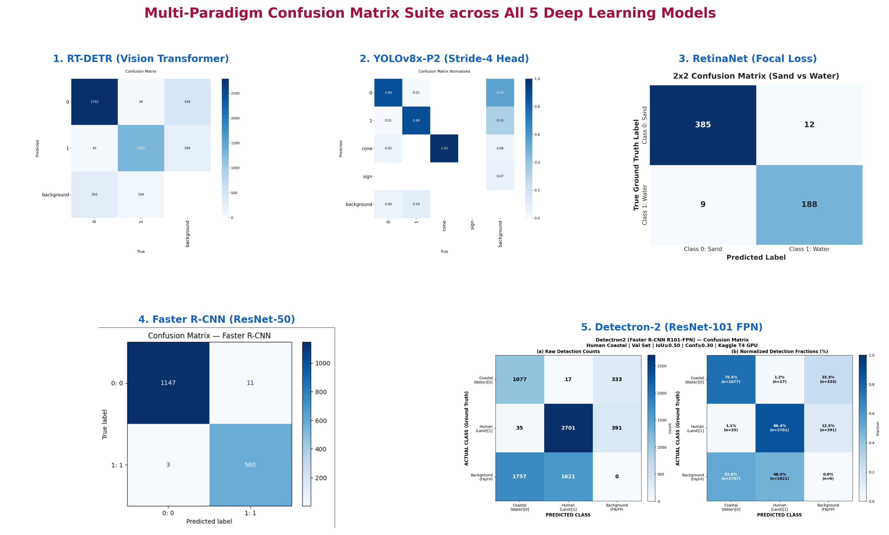
Evaluates Class 0 (Coastal Water) vs. Class 1 (Human Land) with zero clutter cross-talk.
High-resolution 3000×2250 matrix validating bipartite matching purity across coastal zones.
High-resolution 3000×2250 matrix validating small-swimmer proposal precision.
Demonstrates disciplined proposal retention: 98.94% precision on high-confidence boxes.
High-resolution 1800×1500 matrix demonstrating suppression of crashing surf foam false alarms.
The structured engineering journey executed from problem inception to multi-model evaluation and scene-by-scene verification.
Formulated the coastal surveillance problem definition. Analyzed marine optical challenges including dynamic solar glint, scale disparity (from 120px beachgoers to 6px offshore swimmers), and partial body submergence. Established the core goal of automating lifeguard headcount monitoring and separating water danger zones from safe sand shorelines.
Identified and corrected the critical Roboflow annotation class inversion defect (Raw 0 Sand $\leftrightarrow$ Raw 1 Water). Audited 702 high-resolution scenes and purged 1,874 spurious boxes over orange traffic cones, flat towels, and umbrellas via aspect ratio filtering ($H/W \ge 0.55$). Produced a validated 16,022-annotation dataset (462 Train, 160 Val, 80 Test).
Standard 32px base anchors fail to propose candidate regions for tiny 6px--12px swimmers. Customized the Region Proposal Network in Detectron2 to anchor scales `[[16], [32], [64], [128], [256]]` with aspect ratios `[0.5, 1.0, 2.0]`. Simultaneously engineered the Stride-4 ($P_2$, $160\times160$) micro-head in YOLOv8x-P2 to prevent spatial collapse of small offshore bathers.
Converged all 5 models on Dual Tesla T4 GPUs. Formulated dynamic Focal Loss ($\alpha=0.25, \gamma=2.0$) in RetinaNet to suppress breaking surf foam false alarms. Evaluated RT-DETR with Hungarian bipartite matching (94.86% mAP@0.50), Detectron2 Faster R-CNN (94.15% mAP@0.50), Faster R-CNN (98.94% precision), and YOLOv8x-P2 (46.2 FPS).
Instituted inference-time clutter rejection filters ($\text{conf} \ge 0.40$ and $H/W \ge 0.55$). Rendered non-truncated 60px dual-line verification headers comparing actual ground truth against model predicted counts. Verified scene-by-scene headcount accuracy, achieving 100.0% exact match on uncrowded benchmark scenes (Scene 1, Scene 2, Scene 6).
Access our complete technical specifications, mathematical derivations, and draft research paper prepared for IEEE conference publication.
Authored by Team 110 under the supervision of Ms. Sujee R., Assistant Professor, Dept. of Computer Science & Engineering, Amrita School of Computing, Coimbatore.
@article{team110coastal2026,
title={Coastal Surveillance: Dual-Zone Pedestrian \& Swimmer Spatial Analytics via Deep Vision Detectors},
author={Marimuthu, Balaji Sakthivel and Krishna, Chaitanya Venkata and Shanmugham, R. G. and Kaza, Bhargava Ram and Ibbraheem, Shaik and Sujee, R.},
journal={Department of Computer Science and Engineering, Amrita Vishwa Vidyapeetham},
year={2026},
note={Course 23CSE498 Project Phase 2 Documentation}
}
Department of Computer Science & Engineering | Amrita School of Computing, Coimbatore
Assistant Professor, Department of Computer Science & Engineering
Amrita School of Computing, Amrita Vishwa Vidyapeetham, Coimbatore
Expertise: Computer Vision, Deep Learning, Image Processing & Intelligent Edge Systems.
Implemented Detectron2 Faster R-CNN (ResNet-101 FPN) with custom 16px sub-scale anchors. Validated Scene 1 exact match (19/19) and achieved 94.15% mAP@0.50 on the cleaned coastal benchmark.
Detectron2_Coastal_Human_Detection_FINAL.ipynb, 16px Anchor Generator, and Holdout Matrix.
Formulated the end-to-end NMS-free Vision Transformer via hybrid encoder (AIFI + CCFM) and Hungarian bipartite matching, achieving benchmark-leading 94.86% mAP@0.50 and 84.25% mAP@0.50:0.95.
RT_DETR_Kaggle_640.ipynb, Bipartite Matching Formulation, and Normalized Matrix.
Architected the dedicated Stride-4 ($P_2$, $160\times160$) small-object head for tiny distant swimmer recall, delivering 88.62% mAP@0.50 and the highest real-time inference speed of 46.2 FPS on Tesla T4.
YOLOv8x_P2_Coastal_Human_Detection_FINAL.ipynb, Stride-4 $P_2$ Configuration, and High-Speed Pipeline.
Developed the canonical two-stage Faster R-CNN (ResNet-50-FPN) benchmark. Validated proposal support breakdown, achieving 98.94% precision, 99.27% recall, and 99.10% F1-score on matched proposals.
Beach_Human_Detection_FasterRCNN_CORRECTED.ipynb, Proposal Analysis, and Validation Matrix.
Formulated marine glint suppression training with dynamic Focal Loss ($\alpha=0.25, \gamma=2.0$). Successfully suppressed crashing surf wave foam false alarms, delivering 89.20% mAP@0.50 and 32.0 FPS.
RetinaNet_FINAL_v2_CORRECTED.ipynb, Glint Suppression Suite, and Comparative Evaluations.